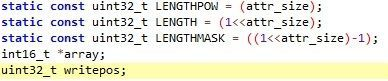
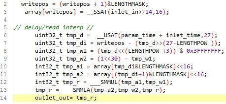

Hi there, so for a project i'm doing for university, i am attempting to make a delay among other things (chorus & flanger, but they are derivatives on delay), and have found the way its done in factory objects is rather different to what i've been taught. To clear up any confusion, the object i am using is a combination of delay rite/read interp.
If we look at the local data it seems there are 3 delay related variables

I can see what these are defined as, but not really sure as to what each of them really do. In the processing code (s-rate) "LENGTH" isn't actually used at all, only LENGTHPOW * LENGTHMASK are used.

If we look at line 2 & 3 for example, this looks like the inlet actually being written to the buffer, but unsure as to what &LENGTHMASK is doing? and LENGTHPOW for that matter
And again with the processing code from read interp, I've been taught how to use buffers by having a read and a write pointer in a circular buffer that wraps around, but cant see anything to do with a read pointer, instead it looks like on line 7, tmp_di is a variable relating to the write point which acts as the read point, is this right ? but the code after that does get a bit lost on me, its so different to what i was taught! You're probably just thinking why not use what you where taught ? well i i would love to, but we where given a framework to work in written by our lecturer, and haven't had much success in porting it over (way too many error messages)
The main reason i am investigating all of this is because i am attempting to make a chorus from this as a building block, i have put the lfo inside the object and that all works, but i cant seem to figure out where to apply the lfo as there isnt an obvious read pointer!
Here is what i've done so far dead chorus.axo (4.1 KB) please let me know if you can help 
 there is now no more error in console, only:
there is now no more error in console, only:
{kind=link}